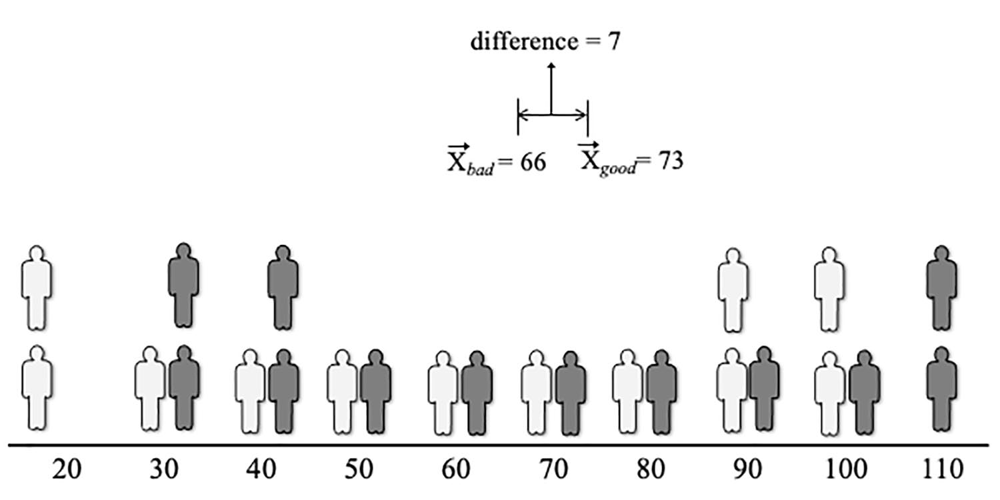
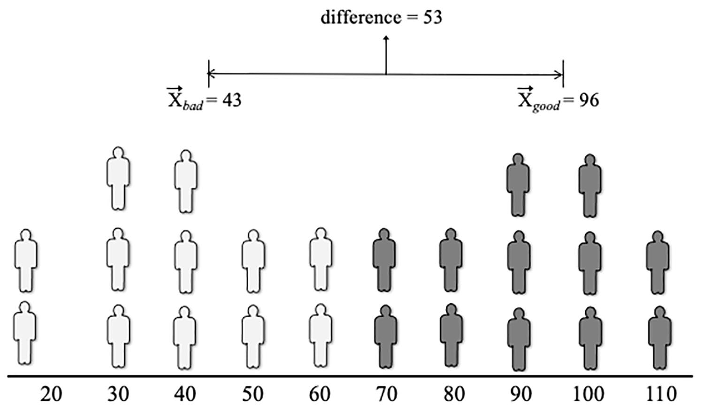

- 对理想伴侣偏好的概念化和测量大多停留在维度上，缺乏实验证明
- 难以对理想进行操作
- 本研究提供一种社会认知范式，让研究者可以操纵被试的理想伴侣偏好
1 理想伴侣偏好的理论模型和结果
- 四种理论模型，可分为两个维度
- 因变量：特质知觉（trait perception）和评价（evaluation）
- 特质知觉：我认为我的伴侣是聪明的
- 评价：我渴望（desire）我的伴侣
- 目标：单人和多人
- 单人：我认为我的伴侣是聪明的
- 多人：我认为他们是聪明的
- 因变量：特质知觉（trait perception）和评价（evaluation）
- 动机性投射（Motivated Projection）视角
- 对某一特质的理想偏好，导致个体感知到自己的伴侣拥有该特质
- 动机可以中介理想和关系满意度、稳定性等结果变量的关系
- 因变量：特质；目标：单人（当前和潜在）
- 理想伴侣偏好-匹配（特质加权）（Ideal Partner Preference-Matching，trait-weighting）视角
- 当伴侣符合理想时，理想会使被试对浪漫伴侣产生积极的感觉
- 理想特质作为权重，调节理想和满意度等因变量的关系
- 因变量：评价；目标：单人（当前和潜在）
- 感知者效应（Perceiver Effect）视角
- 对某一特质的理想偏好，导致个体认为所有人都普遍拥有该特质
- 因变量：特质；目标：多人
- 情境选择（Situation Selection）视角
- 对某一特质的理想偏好，导致个体寻求能遇到高该特质伴侣的情境
- 因变量：对情境的评价或选择；目标：情境（理论上也算多人）
- 实验操纵的缺失，使得相同的相关数据可以解释为上述任意一种
- 理想是比较持久的，很难操纵，但社会心理学研究中可以对自尊、文化、阶级、性别等个体差异进行操纵，因此对理想进行操纵是可能的
2 创建一个可复现且稳健的理想伴侣偏好操纵
- 协变检查范式（Covariation Detection Paradigm）
- 在 Eastwick et al. (2019) 研究的
Date-Fest任务基础上，将外星人的新颖虚构特质改为真人面孔的真实特质- 对不同面孔选择是否去约会，然后根据设置给出得分，如果选择不去，也会告知去和不去分别的得分
- 某种特质会获得好的结果；另一种会获得坏的结果，形成显性（功能性）偏好，通过特质和得分的相关性来控制
- 完成多轮任务后，对特质进行打分，检测陈述性（概括性）偏好
3 本研究
- 研究1：用高性能设计（调整特质和得分相关）来检验操纵是否有效
- 研究2：检验操纵结果是否和上述四种理论的结果相符合
4 研究1
4.1 方法
- 数据、分析代码、材料、预注册信息可在OSF获得
4.1.1 被试数量
- 根据预注册信息（1300被试；约30%排除率）招募1857名被试
- 预注册时说明：如果最终有效被试不及1300名，根据实际排除率（\(e\)）,再招募\(n = (1300 - current\,n)/(1 - e)\)额外被试
- 因为实验材料是男性面孔，所有被试都偏好男性
- 1639名有效被试（1536女；97男；6其他），63.9%白人，平均恋爱时长64.8个月
- 836人强功能偏好条件；803人弱功能偏好条件
4.1.2 流程和材料
- 完成初筛，要求18-35岁，首要性取向是男，正在恋爱关系中
- 提供恋人、朋友、不喜欢的人的名字缩写
- 完成
Date-Fest任务，对理想的Reditry和伴侣的Reditry进行评分 - 完成对关系满意度、幽默感（理想和伴侣）、情境选择，自我、朋友、陌生人和不喜欢的人的评价
4.1.3 Date-Fest
- 分别选择与24名派对客人约会，选择愉快的获得10分（设有12名），选择不愉快的扣10分（另外12名），尽可能得高分
- 只有选择约会才会加分或扣分，但为了确保学习到相同信息，选择不约会时会告诉被试，如果选择了是什么结果
4.1.4 操纵功能性偏好
Reditry是创造出来的新词，实际指年轻、娃娃脸特征，根据Chicago Face Database（CFD）的babyfacedness值算出的- 避免了对年轻原有信念的影响
- 弱相关如 图 1 所示；强相关如 图 2 所示
- 图中黑色人（12个）选择了会得分，白色人（12个）选择了会扣分
- 10-110是
Reditry得分 - 得分和失分约会对象，
Reditry的差值大说明强相关、差值小说明弱相关 - 24个人整体的
Reditry均值是相同的（不同Reditry下人数相同）


- 选择前，被试可以看到
Reditry值和幽默值，选择界面如 图 3 所示- 幽默值所有实验组都一致，且和
Reditry无显著相关，用于区分效度（discriminant validity）检验
- 幽默值所有实验组都一致，且和
4.1.5 操纵检验
- 从important、value、desirable、ideal四个方面提问对浪漫伴侣
Reditry特征的需求 - 从相同四个方法询问了对幽默的需求，进行区分效度检验
4.1.6 因变量
- 伴侣属性评估：你现在的伴侣的
Reditry和幽默值 - 关系满意度：Investment Model Scale(Rusbult et al., 1998)中的五道题
- 情景选择项目：单身情况下，在某个网站可以找到
Reditry或幽默值前30%的浪漫伴侣，你愿意为了这个注册吗 - 他人属性评估：伴侣属性评估应对象换成朋友、陌生人或者讨厌的人
- 注意力检测
4.2 结果
- 操纵检测：成功，强相关组显著大于弱相关组
- RQ1：对当前伴侣的评价（动机性投射）
- 成立，且效应量大
- RQ2：影响满意度（偏好-匹配）
- 存在实验条件和对伴侣评价的交互
- 建构回归模型，条件编码为-1,1，对伴侣评价标准化，交互项标准化
- 强相关显著负值；评价显著正值；交互项显著正值
- 条件负值可能是因为基线变高了；交互正值说明增强了伴侣相关特质评价对满意度的影响，支持偏好-匹配假说
- 建构实验条件和满意度的交互，伴侣特质评估作为因变量
- 均显著正值
- 说明提高了高满意度者对伴侣相关特质的评价
- RQ3：对其他人的评价（感知者效应）
- 对自己、朋友、陌生人评价均显著增加；对讨厌的人降低
- 支持感知者效应
- RQ4：渴望加入特别网站（情境选择）
- 加入意愿显著增加
- 支持情境选择
- 幽默值
- 均不显著或者轻微显著
- 支持全部四种假说
5 研究2
- 排除主试预期的影响
- 检验真实名称（youthfulness）是否能复刻结果
5.1 方法
- 数据、分析代码、材料、预注册信息可在OSF获得
5.1.1 被试数量
- 使用
InteractionPoweR包预测复现RQ2的交互结果 - 2027名有效被试（1897女；96男；34其他），64.0%白人，平均恋爱时长63.1个月
- 1011人强功能偏好条件；1016人弱功能偏好条件
5.1.2 流程和材料
- 大体和研究1相同
- 用
youthfulness替换Reditry，确保可以应用到真实情境 - 补充部分控制变量
youthfulness的含义：不成熟 vs. 活力，-4到4- 对研究的态度：乐意、重视、感兴趣、推荐朋友参与(Nichols & Maner, 2008)
5.2 结果
- 操纵检测：成功，但效应量小于使用
Reditry - RQ1
- 动机性投射成立
- RQ2
- 研究1中的两个交互效应均不显著
- 实验操纵并没有提高年轻对关系满意度的影响，也没有提高关系满意度对年轻的感知
- RQ3
- 对自己、朋友存在显著提高，但效应量变小
- 陌生人和讨厌的人无显著差异
- RQ4
- 加入意愿显著增加
- 幽默值
- 均不显著或者轻微显著
youthfulness的含义作为控制和关系满意度的中介youthfulness的含义在控制条件下更积极- 参考 Yzerbyt et al. (2018) 的成分法（Component Approach）进行中介分析
- 完全中介成立
- 对研究的态度进行交互，不显著或和预测相反
- 研究2复现了研究1中的大部分结果，但整体效应量小于研究1
6 讨论
6.1 四种因果解释
- 动机性投射得到支持
- 偏好-匹配研究1支持，研究2不支持，可能是差异太小了，样本量不够
- 感知者效应得到部分支持
- 情境选择得到支持
- 幽默值证明操纵的是特定特质，不是普遍特质
6.2 启示
- 理想特质在心理距离较远时可能更强烈地预测浪漫决策
- 根据文字选择网站
- 理想特质的功能与动机的关系比与匹配的关系比可能更紧密
- 理想特质对感知的影响大于对比较（匹配）的影响
- 人们倾向于在浪漫伴侣身上看到他们想看到的东西
- 带有因果意涵：从理想特质到感知
- 关于喜好的观念至少部分基于过去的喜好体验
youthfulness的效应量小于Reditry
- 根据情境选择假说，可以推论：因为选择自己偏好的情境，个体更难更新自己的理想偏好
6.3 局限
- 男性面孔
- 特质单一
- 缺少对其他心理机制的检验
- 只检验了偏好的加权，没检验其阈值等其他特征
- 情境选择的情境不够自然
6.4 优势
youthfulness偏中性- 大型国际研究
- 对变量进行了操纵
参考文献
Eastwick, P. W., Smith, L. K., & Ledgerwood, A. (2019). How do people translate their experiences into abstract attribute preferences? Journal of Experimental Social Psychology, 85, 103837. https://doi.org/https://doi.org/10.1016/j.jesp.2019.103837
Frost, A. D., & Eastwick, P. W. (in press). Experimental tests of the role of ideal partner preferences in relationships. Personality and Social Psychology Bulletin. https://doi.org/10.1177/01461672251339575
Nichols, A. L., & Maner, J. K. (2008). The good-subject effect: Investigating participant demand characteristics. The Journal of General Psychology, 135(2), 151–166. https://doi.org/10.3200/GENP.135.2.151-166
Rusbult, C. E., Martz, J. M., & Agnew, C. R. (1998). The investment model scale: Measuring commitment level, satisfaction level, quality of alternatives, and investment size. Personal Relationships, 5(4), 357–387. https://doi.org/https://doi.org/10.1111/j.1475-6811.1998.tb00177.x
Yzerbyt, V., Muller, D., Batailler, C., & Judd, C. M. (2018). New recommendations for testing indirect effects in mediational models: The need to report and test component paths. Journal of Personality and Social Psychology, 115(6), 929–943. https://doi.org/10.1037/pspa0000132